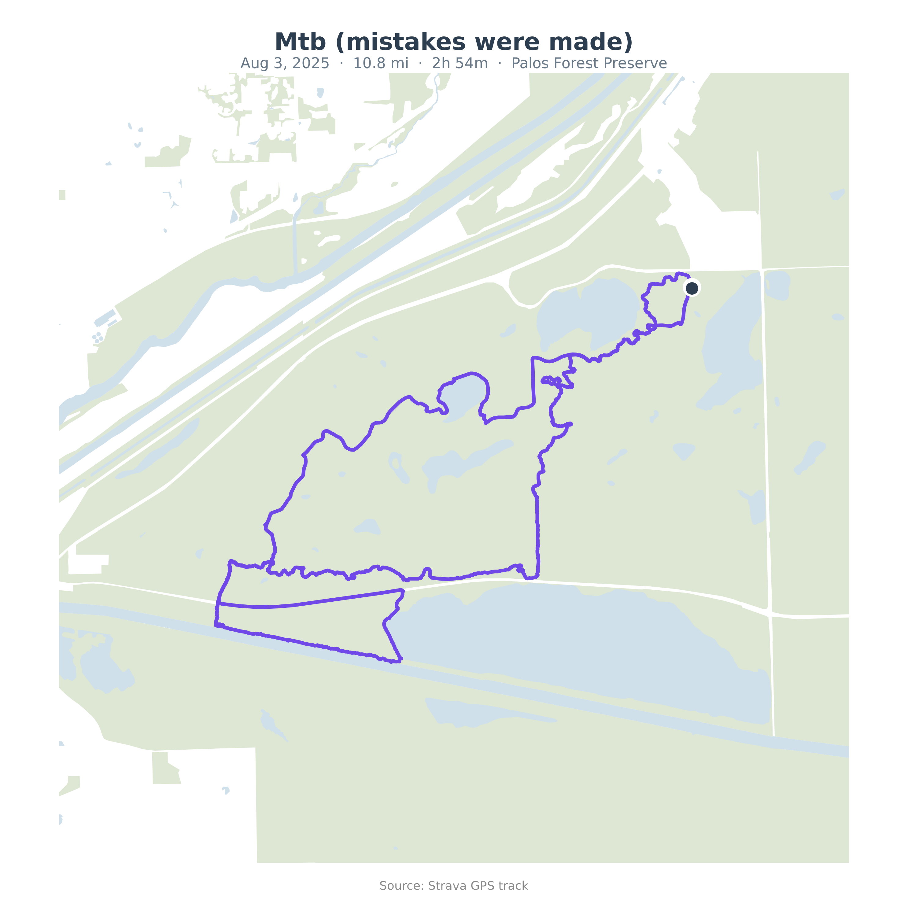
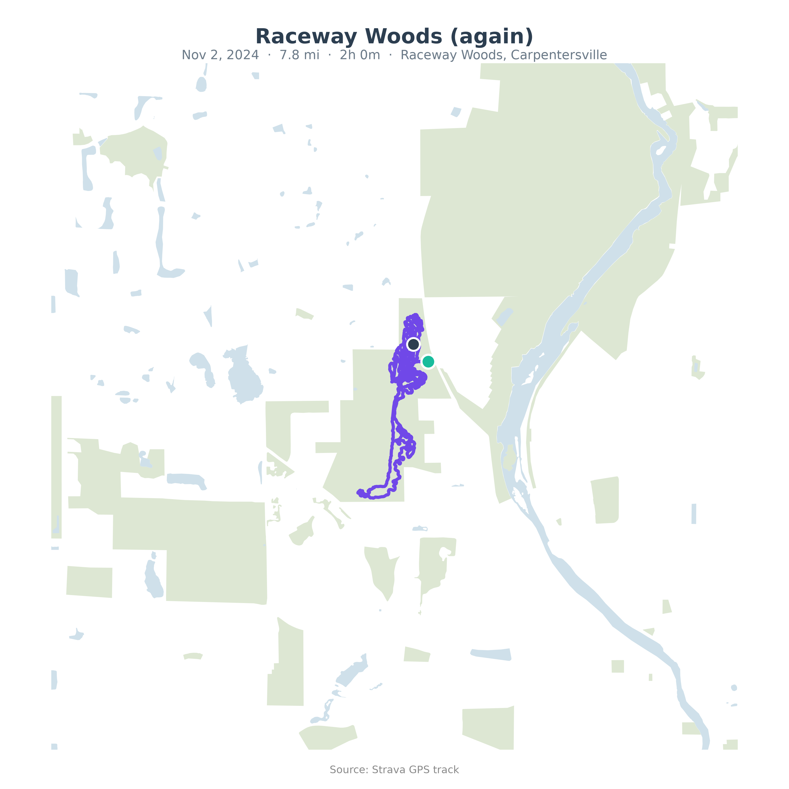
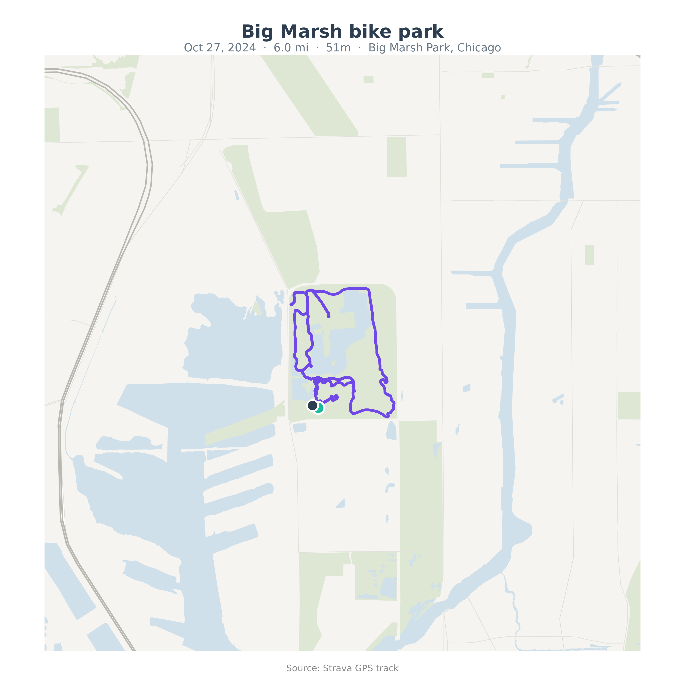
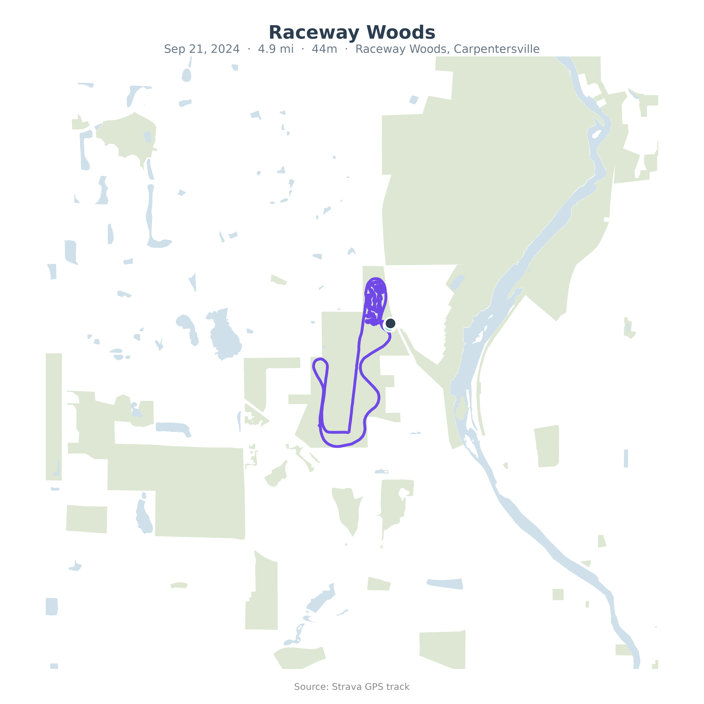
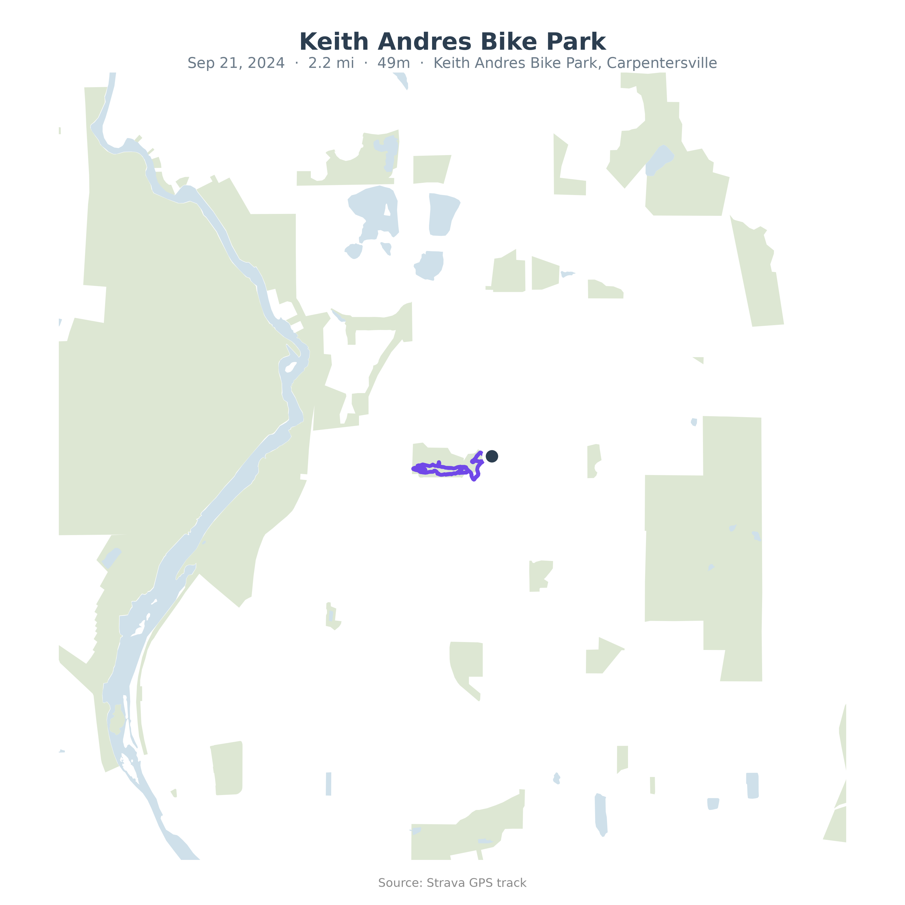
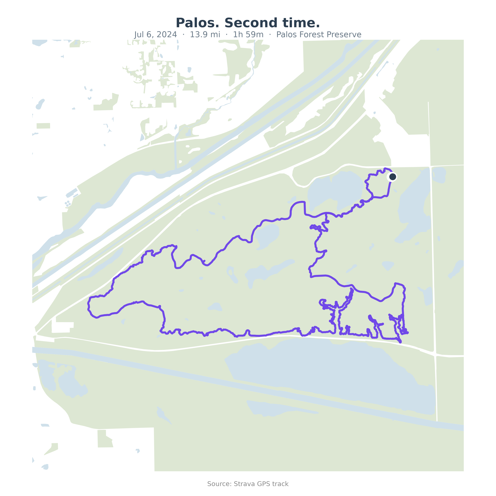
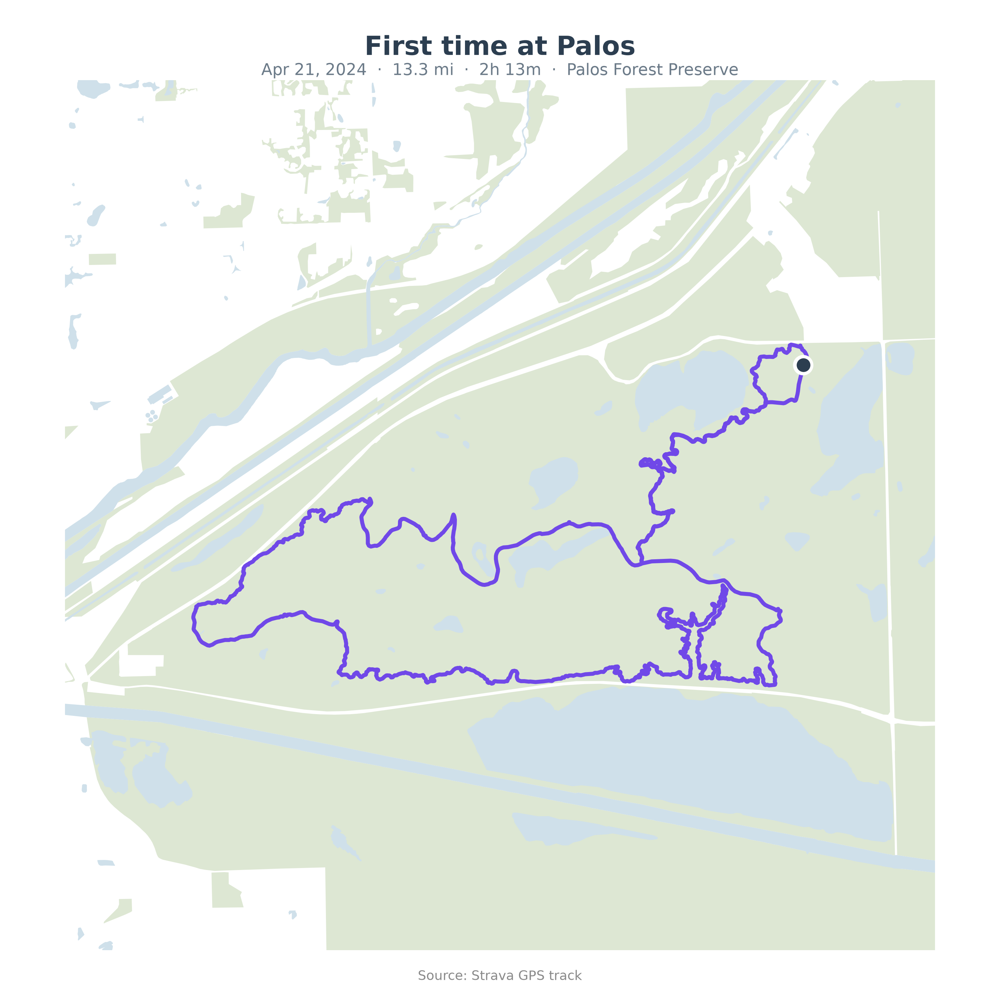

Palos MTB
Palos Forest Preserve · May 31, 2026
13.9 mi
Distance (22.4 km)
2h 4m
Ride time
6.7 mph
Avg speed (incl. stops)
20.5 mph
Top speed
Mountain biking
Activity type
GPS routes from Strava, mapped on an OpenStreetMap-based basemap
Palos Forest Preserve · May 31, 2026

Palos Forest Preserve · Aug 3, 2025

Raceway Woods, Carpentersville · Nov 2, 2024

Big Marsh Park, Chicago · Oct 27, 2024

Raceway Woods, Carpentersville · Sep 21, 2024

Keith Andres Bike Park, Carpentersville · Sep 21, 2024

Palos Forest Preserve · Jul 6, 2024

Palos Forest Preserve · Apr 21, 2024